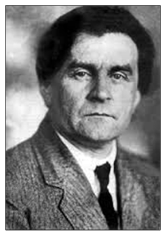
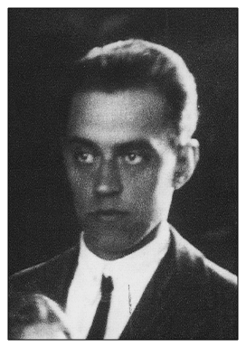
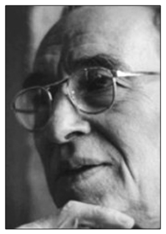

Artistas Suprematistas

Kazimir Malévich
Malevich, aún no siendo un artista destacado por la calidad de su pintura, como pionero de la abstracción estricta sí fue uno de los más arriesgados pioneros de la vanguardia dura.
Fue un pintor ruso de origen polaco, el creador del Suprematismo. Luego de cinco años en la Escuela de Agricultura, le gustaba el campo y aprendió por su cuenta a pintar los paisajes de que lo rodeaban.
Luego de un tiempo fue a Ucrania, donde se dedicó solamente a pintar y donde hizo su primer obra.
Comenzo siendo un artista orientado al Impresionismo, luego pasó por el Fauvismo, para después un Cubismo. De este último, toma el análisis de la forma y de los volúmenes.
Pero también de los futurístas, la ilusión del movimiento.
Malévich, en sus ultimas épocas realiza unos escritos, con sus estudios de las distintas vanguardias.
Y fallece en Rusia, a principios de 1935.

Nikolai Suetin
Nikolái se baso de las teorías artísticas de Kazimir Malévich no sólo en sus obras, sino que se tambien para la vida diaria.
Entre 1918 y 1922 estudió en la escuela de arte de Vitebsk, dirigida por Marc Chagall, donde conoció a Malévich y al poco tiempo se convirtieron en grandes compañeros, siguiendo juntos con el Suprematismo, difundiendolo mediante exposiciones.
Más tarde crearon un grupo Unovis(Los Heraldos del Nuevo Arte).
En 1922 Nikolai, acompañó a Kazimir al Instituto de Cultura Artística, donde trabajaron entre otras prácticas, en la realización de diseños arquitectónicos suprematistas que nunca llegaron a construirse.
Luego como escenógrafo de exposiciones, como por ejemplo la Exposition Internationale de 1937 en París.
También a partir de 1923 trabajó en la fábrica estatal de cerámica Lomonossov de San Petersburgo, donde uso la estética suprematista a las decoraciones de las piezas de porcelana.
Nikolai falleció el 22 de enero de 1954.

Paul Mansouroff
Nació en San Petersburgo, Rusia, en 1896.
En el año 1906 empezó unos cursos de de dibujo en el Instituto Central de Dibujo técnico Stieglitz.
Más tarde, en 1912 entró en la Escuela de Dibujo de San Petersburgo.
Como consecuencia de la revolución de octubre 1917, Paul se anotó a la vanguardia rusa, que estuvo como profesor e investigador en Moscú, donde conoce a Malévich, entre otros grandes artistas.
Trabajando con ellos, logra ver cuales eran las obras que realmente le interesaban; las abstractas.
En 1928 se va a vivir a Francia, donde conoce a Picasso.
Luego de una época de pocas ganancias, se ve necesitado a cambiar su orientación hacia las Artes Aplicadas, más específicamente el tejido.
Al rededor de los años 60, emigra nuevamente, pero a Niza, donde fallece en 1983.